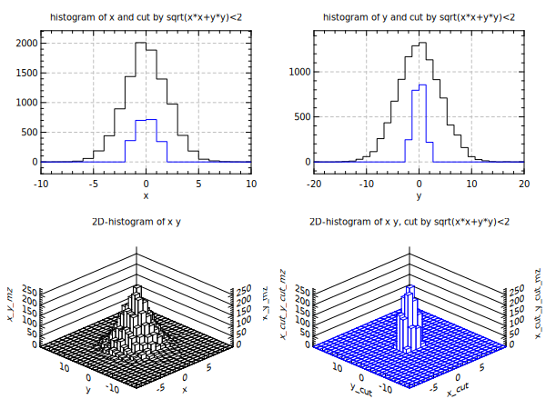

opt (gd:1)
set x = random(10000,gaus,2,0) ;# random gaussian sigma=2 mean=0
set y = random(10000,gaus,4,0) ;# random gaussian sigma=4 mean=0
@ nx = 20 ;# bin number of x histogram
@ ny = 30 ;# bin number of y histogram
@ xr = "-10,10" ;# range of x histogram
@ yr = "-20,20" ;# range of y histogram
@ cc = "sqrt(x*x+y*y)<2" ;# cut condition
cut x,y "[cc]"
div 2 2
title "histogram of x and cut by [cc]"
opt (nb:[nx] xr:[xr]) ;# set bin and range
hplot x
hplot x_cut (lc:blue rp:1)
title "histogram of y and cut by [cc]"
opt (nb:[ny] xr:[yr]) ;# set bin and range
hplot y
hplot y_cut (lc:blue rp:1)
title "2D-histogram of x y"
opt (nx:[nx] ny:[ny] xr:[xr] yr:[yr]) ;# set bin and range
hplot2 x y
title "2D-histogram of x y, cut by [cc]"
hplot2 x_cut y_cut (lc:blue)
